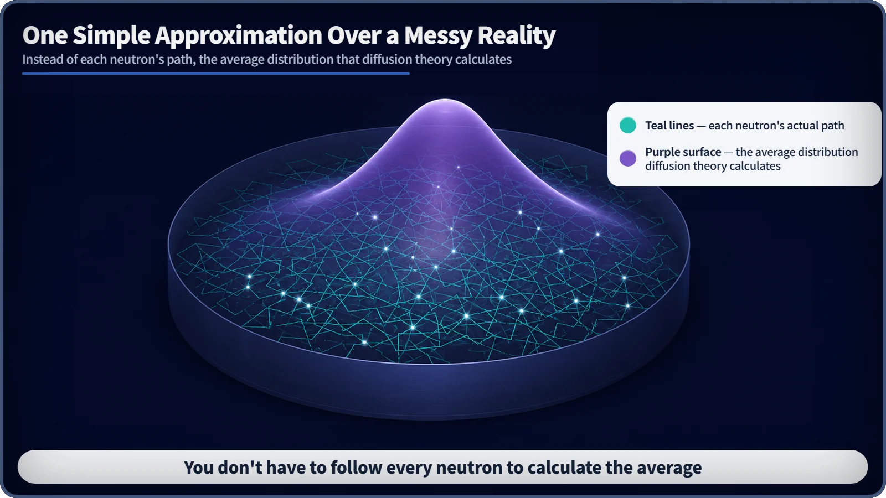
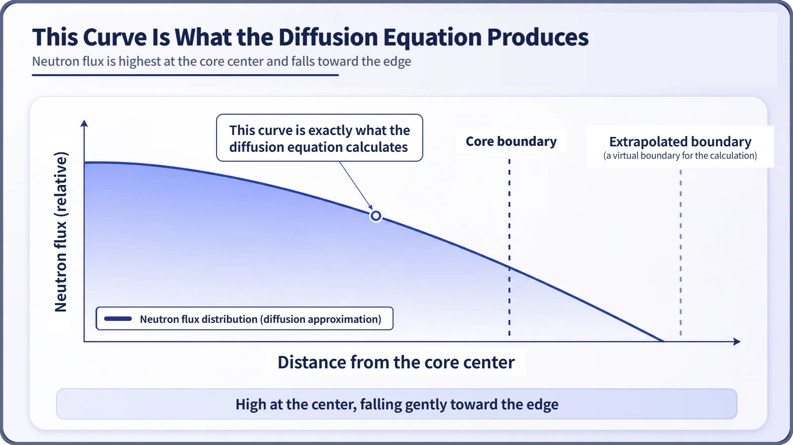

Neutron Physics & the Core · 080
The Forecast Doesn't Track Every Raindrop — Why Reactor Physics Needs Diffusion Theory
Close enough to the exact answer, and far lighter to compute.
Diffusion theory calculates the smooth average distribution of neutrons in a reactor core instead of tracking each neutron's random path. It is an approximation: a practical compromise that stays close enough to the exact answer while being far lighter to compute, which is why it is a workhorse of core design.
Do we have to chase every neutron?
Inside a reactor, countless neutrons dart in every direction every second. Some bounce off nuclei, some cause fission and create new companions, and some are absorbed and vanish. To calculate how the reactor is behaving, do we really have to follow every one of them? Fortunately, no, and the reason is diffusion theory.
Forecasters don't follow raindrops one by one
A weather service never announces that a particular raindrop will land at a particular spot at 3:12 p.m. It forecasts a rainfall distribution over a wide area: this region will likely get 20 mm of rain per hour, that one 5 mm. Each drop moves almost at random, but together they form a smooth, useful distribution.
Traffic models work the same way. Instead of tracking every car's steering, they calculate flow: how many cars pass a stretch per hour, and where the jam begins. Neutrons are no different. One neutron's path is hard to predict, but huge numbers of them produce a smooth distribution of how actively neutrons are present at each spot in the core. Calculating that distribution is diffusion theory.
Lumping neutrons together instead of tracking each one
An equation describing the real motion of individual neutrons exactly already exists, the neutron transport equation, and computers can also track neutrons statistically one by one with the Monte Carlo method. Both demand an enormous amount of computation. Rerunning them from scratch every time designers try a slightly different fuel arrangement or nudge a control rod would be far too slow for everyday design work.
Diffusion theory simplifies the transport equation under a few realistic assumptions, such as that neutron directions are nearly evenly mixed at any given place, and solves for one smooth function: roughly what the neutron flux is at each location. It gives up a little accuracy, and in return the distribution across the whole core arrives in a practical amount of time. It is needed not because it is the most accurate, but because it is close enough while being much lighter to compute. How close depends on the core's geometry and conditions, so no single error figure applies.

From strong to weak: the feel of the diffusion equation
Open a perfume bottle and the scent spreads on its own from where it is strong to where it is faint. Diffusion theory uses the same intuition: neutrons make a net movement from where the neutron flux is high toward where it is lower.
Neutron current J ∝ −D × (slope of the neutron flux)
The more sharply the flux changes at a spot, the stronger the flow in that direction; D, the diffusion coefficient, describes how easily neutrons spread through the material. In a real core, new neutrons are constantly born in fission and replenished in the center, while a growing share leaks out toward the edges, so the flux falls off gently from center to edge. Combining this spreading with where neutrons are produced and lost gives the diffusion equation, which calculates the flux distribution across the whole core.

Not perfect, but reliable in practice
As an approximation, diffusion theory has limits. Near the outer boundary of the core, or right next to a control rod that strongly absorbs neutrons, the assumption of evenly mixed directions holds poorly and the error can grow. Boundary corrections such as the extrapolation distance, which vary with the analysis code and reactor type, or more precise calculations fill those gaps.
| Diffusion theory | Detailed transport / Monte Carlo | |
|---|---|---|
| What it computes | smooth average flux distribution | individual neutron behavior, statistically |
| Computing cost | light | enormous |
| Weak spots | core boundaries, next to strong absorbers | time and cost for repeated runs |
| Typical use | reviewing many design options quickly | precise checks |
The flux distributions from diffusion theory are basic data for deciding how to arrange fuel and where to place control rods. They are compared with measurements at real plants for validation and used to check that power isn't piling up in one spot. Diffusion theory and Monte Carlo are not rivals; they are different tools for different situations.
Key takeaways
Diffusion theory lumps the motion of countless neutrons into one smooth distribution, the way a forecast predicts rainfall instead of raindrops. It trades a little accuracy for much lighter computation, making it practical for core design and repeated analysis, with corrections or precise methods where the approximation weakens.